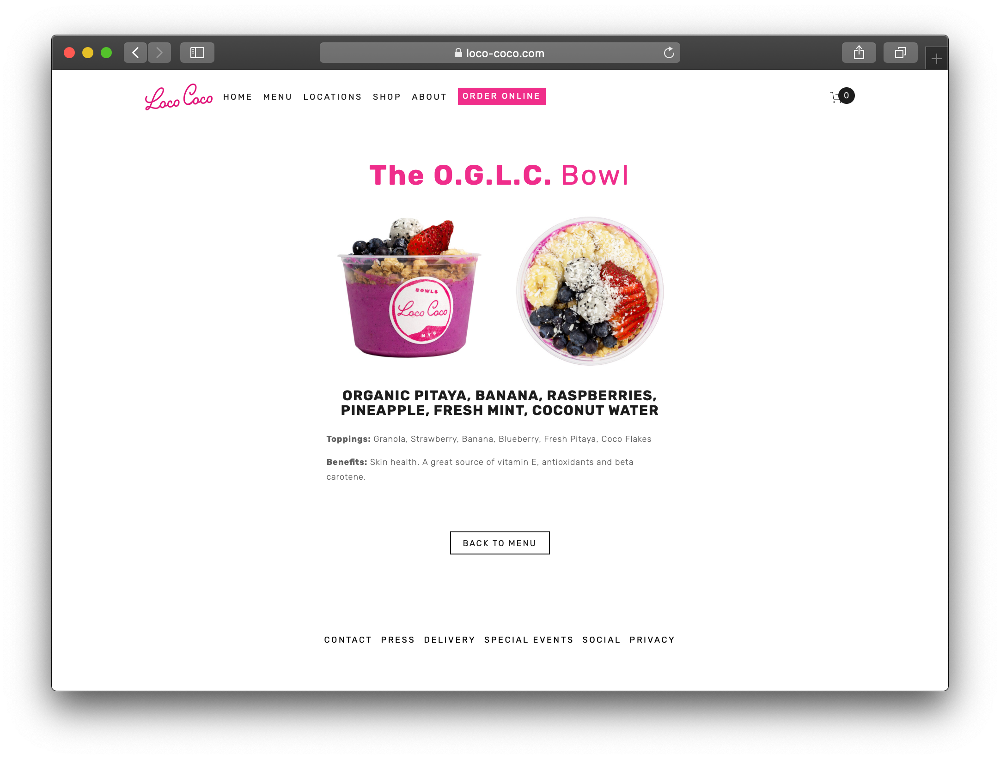
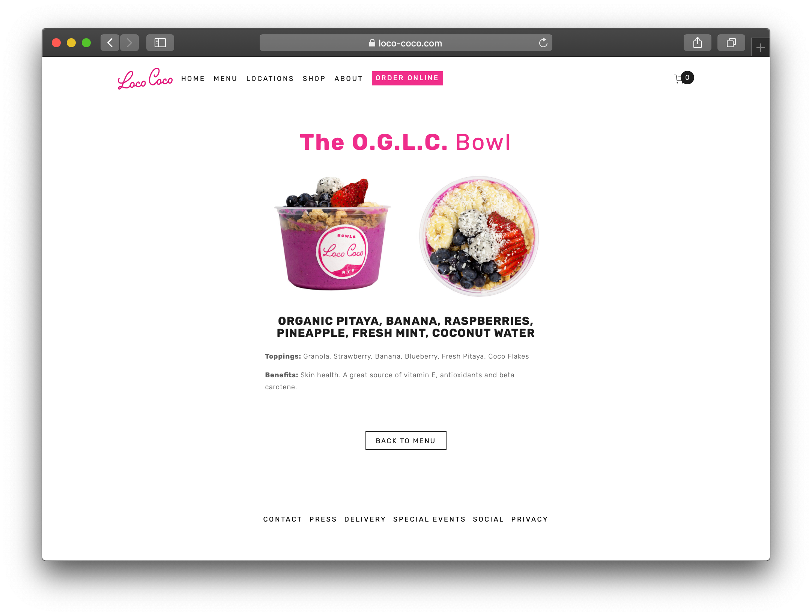
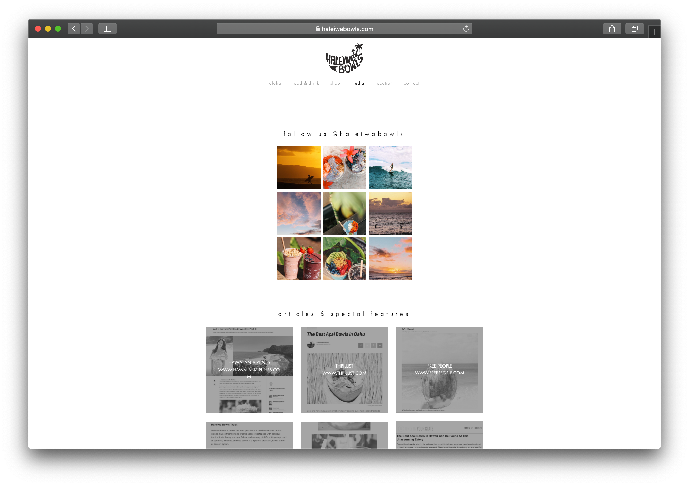
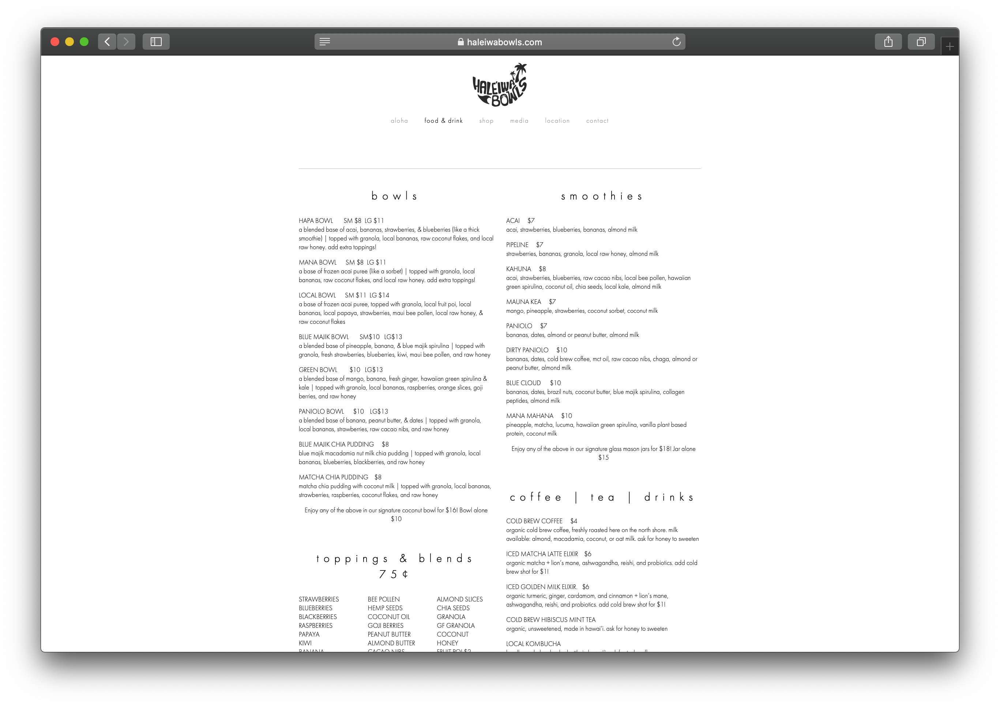

Final project proposal
Introduction
MANA — The Powerhouse
MANA—which means power/powerful in Hawaiian—is a smoothie and juice bar especially for active and busy individuals. It is located in the heart of Oahu, HI and was established in 2020 by fresh Cal Poly graduates, Stephanie Botto and Ana Jahrstorfer. This bar is perfect for those who need to pack extra nutrients into their diet whether it be protein, greens, or vitamins, we are here to help you power through your day.
Target audience
MANA’s target audience is Gen-Zers and Millennials, specifically those who care about staying fit/healthy and possess a strong interest in creating aesthetically pleasing content. The walls surrounding the bar open up to reveal our beautifully-decorated indoor/outdoor patio. Behind the bar is a gorgeous display of unique decor that we encourage customers to use as props to generate new and exciting content for their social media. If you post a picture of your purchase on your Instagram, you receive 10% off your next purchase. We want MANA’s social media to be mainly user-generated content or relevant collaborations, so it’s important to us that our audience is keen on modern tech and media.
Comparative analysis
Loco Coco
 

Haleiwai Bowls
 Cafe Organic


Website content
About
Best friends and roomates, Stephanie and Ana moved from San Luis Obispo,CA to Hawaii after graduating from Cal Poly University. Weighlifting and constantly exploring throughout college, both of them shared a passion for a very healthy and active lifestyle. At home, they would enjoy making food together and trying new ways of getting in the nutrients they needed to fuel their lifestyle. Overtime, they developed many unique recipes, especially in the realm of smoothie bowls and shakes. Once settling down in Oahu and seeing how active the islanders are, they knew they wanted to share these nutrient-packed snacks with the rest of the island. Thus, the MANA house was born and they hope to grow it into more than just a food stop. Stephanie and Ana hope for people to connect with others through MANA and even join them for fun social events each month!
[Pitcure of Ana and Stephanie]
Menu
Smoothies
- Earlyriser
- Pow Wow
- Crush It
- Game Day
- The Climb
- Shaka
- Recovery
- The Hulk
- Skinny Legend
Juices
- Mana Mahana
- Kahuna
- Mauna Kea
- Hapa
- Paniolo
Make it a Bowl — Toppings
- strawberries
- blueberries
- blackberries
- raspberries
- papaya
- kiwi
- banana
- bee pollen
- hemp seeds
- coconut oil
- goji berries
- peanut butter
- almond butter
- cacao nibs
- almond slices
- chia seeds
- granola
- gf granola
- coconut
- honey
Supplements/Add-ons
- blue majik(blue spirulina)
- hawaiian green spirulina
- collagen peptides
- beet powder
- mushroom protein
- chia protein
- whey protein
- soy protein
- peanut butter powder
- maca powder
- wheatgrass
- matcha powder
[Flat lay display of smoothie bowls]
Connect
Hey! Let's keep in touch! Sign up for our email list if you want to stay up to date on promotions and social events. Also, follow us on social media and tag us in your pictures for a chance to be featured and win perks!
*link to email*
*link to instagram*
*link to facebook*
*link to tiktok*
[grid of customer images from our socials]